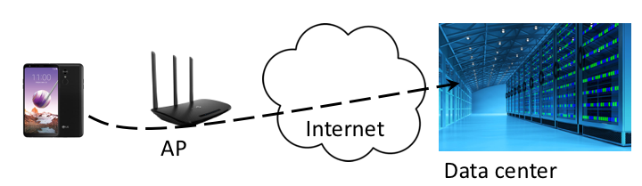
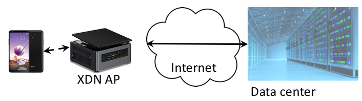

XDN
Geo-distributed services are becoming increasingly more commonplace today and are here to stay because of two fundamental reasons: speed-of-light delays and high availability. Nevertheless, system support for creating and reconfiguring geo-distributed services among cloud hosting and platform providers is poor today.
Nowadays, stateful services, such as games, online documents, distributed file systems, data stores, are commonly hosted on the cloud to achieve high availability despite the fact that responses normally need to travel multiple hops and sometimes cause unexpectedly high response latency.
Our vision is to use technique such as edge computing to tackle speed-of-light delays. Edge computing works by allowing some application's processing to be performed by a small edge server positioned between the origin server and end user, and crucially at a location physically closer to the end user. Similar to, but yet different from, existing edge computing systems, e.g., CDNs and video streaming, which have long been used to cache or stream static contents, XDN is designed to support dynamic stateful services.
XDN control plane comprises a cluster of reconfigurators, which manage all the nodes and services. We use micro/mini PCs, e.g., Intel NUC or a Raspberry PI, for XDN edge nodes. All XDN applications must be containerized as a Docker image to be able to move across different platforms. A containerized app must be registered on the control plane to let XDN migrate it to an edge node. The app running on the edge maintains consistent state through GigaPaxos, a fine-grained RSM system.